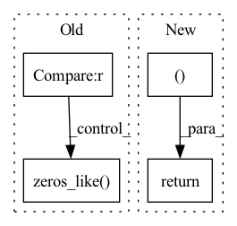

Pattern ID :844

Before Change
def forward(self, z, pos, batch=None):
assert z.dim() == 1 and z.dtype == torch.long
batch = torch.zeros_like(z) if batch is None else batch
if self.derivative:
pos.requires_grad_(True)
After Change
x = x + attn(x, edge_index, edge_weight, edge_attr)
x = self.out_norm(x)
return x, z, pos, batch
def __repr__(self):
return (f"{self.__class__.__name__}("
f"hidden_channels={self.hidden_channels}, "
In pattern: SUPERPATTERN
Frequency: 3
Non-data size: 4
Instances
Fragment ID: 2643793
Project Name: torchmd/torchmd-net
Commit Name: 664a5d31ef39ac64ba4939188322a979eaa9c4f2
Time: 2021-05-13
Author: p.thoelke@gmx.de
File Name: torchmdnet/models/torchmd_t.py
M Class Name: TorchMD_T
N Class Name: TorchMD_T
M Method Name: forward(4)
N Method Name: forward(4)
M Parent Class: nn.Module
N Parent Class: nn.Module
M File Name: torchmdnet/models/torchmd_t.py
N File Name: torchmdnet/models/torchmd_t.py
M Start Line: 125
M End Line: 146
N Start Line: 105
N End Line: 107
'>
Before Change
def forward(self, z, pos, batch=None):
assert z.dim() == 1 and z.dtype == torch.long
batch = torch.zeros_like(z) if batch is None else batch
if self.derivative:
pos.requires_grad_(True)
After Change
for interaction in self.interactions:
x = x + interaction(x, edge_index, edge_weight, edge_attr)
return x, z, pos, batch
def __repr__(self):
return (f"{self.__class__.__name__}("
f"hidden_channels={self.hidden_channels}, "
'>
Fragment ID: 2643794
Project Name: torchmd/torchmd-net
Commit Name: 664a5d31ef39ac64ba4939188322a979eaa9c4f2
Time: 2021-05-13
Author: p.thoelke@gmx.de
File Name: torchmdnet/models/torchmd_gn.py
M Class Name: TorchMD_GN
N Class Name: TorchMD_GN
M Method Name: forward(4)
N Method Name: forward(4)
M Parent Class: nn.Module
N Parent Class: nn.Module
M File Name: torchmdnet/models/torchmd_gn.py
N File Name: torchmdnet/models/torchmd_gn.py
M Start Line: 123
M End Line: 142
N Start Line: 102
N End Line: 104
'>
Before Change
loss = 0
n = torch.sum(y_true[..., 4] == 1)
if n != 0:
//---------------------------------------------------------------//
// 计算预测结果和真实结果的giou
//----------------------------------------------------------------//
giou = self.box_giou(pred_boxes, y_true[..., :4])
loss_loc = torch.mean((1 - giou)[y_true[..., 4] == 1])
loss_cls = torch.mean(self.BCELoss(pred_cls[y_true[..., 4] == 1], self.smooth_labels(y_true[..., 5:][y_true[..., 4] == 1], self.label_smoothing, self.num_classes)))
loss += loss_loc * self.box_ratio + loss_cls * self.cls_ratio
//-----------------------------------------------------------//
// 计算置信度的loss
//-----------------------------------------------------------//
tobj = torch.where(y_true[..., 4] == 1, giou.detach().clamp(0), torch.zeros_like(y_true[..., 4]))
else:
tobj = torch.zeros_like(y_true[..., 4])
loss_conf = torch.mean(self.BCELoss(conf, tobj))
After Change
loss_cls = torch.sum(self.BCELoss(pred_cls[y_true[..., 4] == 1], self.smooth_labels(y_true[..., 5:][y_true[..., 4] == 1], self.label_smoothing, self.num_classes)))
loss = loss_loc * self.box_ratio + loss_conf * self.balance[l] * self.obj_ratio + loss_cls * self.cls_ratio
num_pos = torch.sum(y_true[..., 4])
num_pos = torch.max(num_pos, torch.ones_like(num_pos))
return loss, num_pos
def get_near_points(self, x, y, i, j):
sub_x = x - i
'>
Fragment ID: 2643795
Project Name: bubbliiiing/yolov5-pytorch
Commit Name: d49e041b6f4ef50c5d94ce88d33d147f3227bc77
Time: 2022-01-15
Author: 47347516+bubbliiiing@users.noreply.github.com
File Name: nets/yolo_training.py
M Class Name: YOLOLoss
N Class Name: YOLOLoss
M Method Name: forward(4)
N Method Name: forward(4)
M Parent Class: nn.Module
N Parent Class: nn.Module
M File Name: nets/yolo_training.py
N File Name: nets/yolo_training.py
M Start Line: 158
M End Line: 198
N Start Line: 156
N End Line: 200